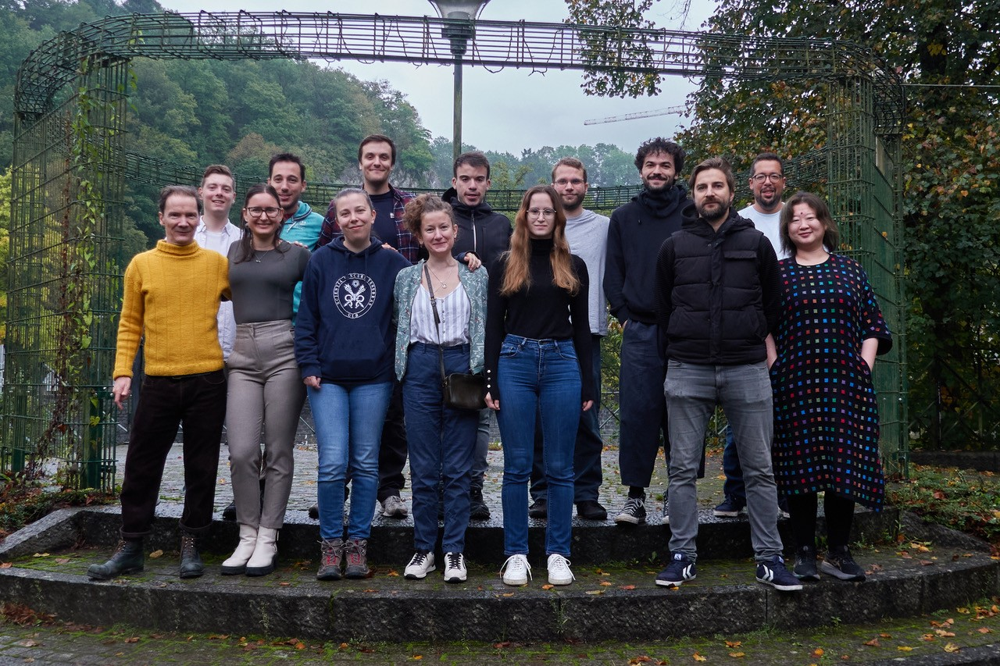

We are a computational biology lab with a small wet lab component,
nurturing strong expertise in generating and analysing human ’omics
data related to somatic evolution, cancer development and progression.s
Our groups constitute a multidisciplinary team gathering researchers with
backgrounds in computer science, mathematics, biology, and bioinformatics.
Research axises
- Thyroid cancer : PTC, ATC, MTC, post-chernobyl PTC, organoid models - somatic evolution
- Cancer transcriptomics: cancer gene signatures - editing - spatial and single nuclei - pancreas clinical signatures
- Microanatomy and histopathology with AI: histome atlas, CODA/VALIS pipeline
- Cancer genomics & somatic evolution: mutation calling - copy-number calling - mutation timing - 3D growth modelling + cancer genetics (Li Fraumeni - Xeroderma Pigmentosum in Tanzania) - XP skin lesions